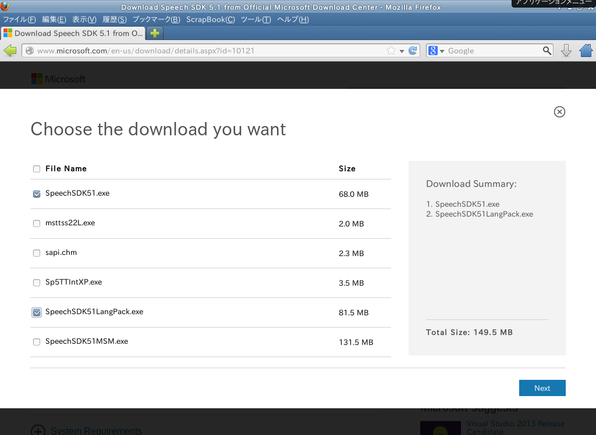
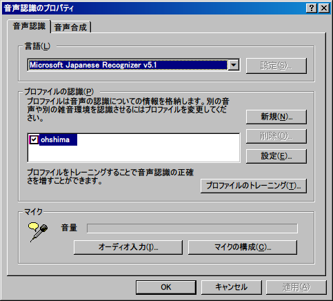
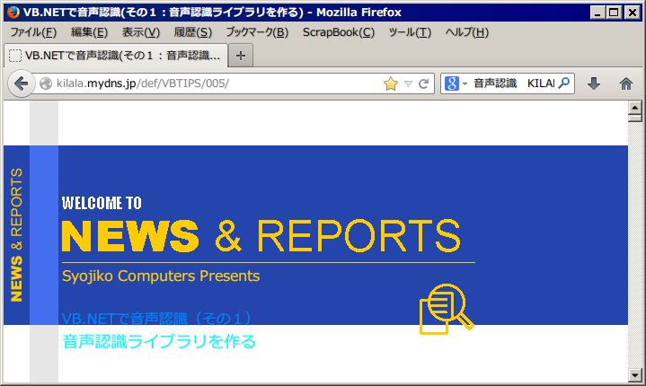
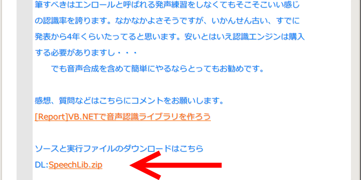
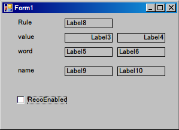
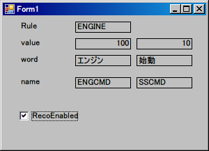
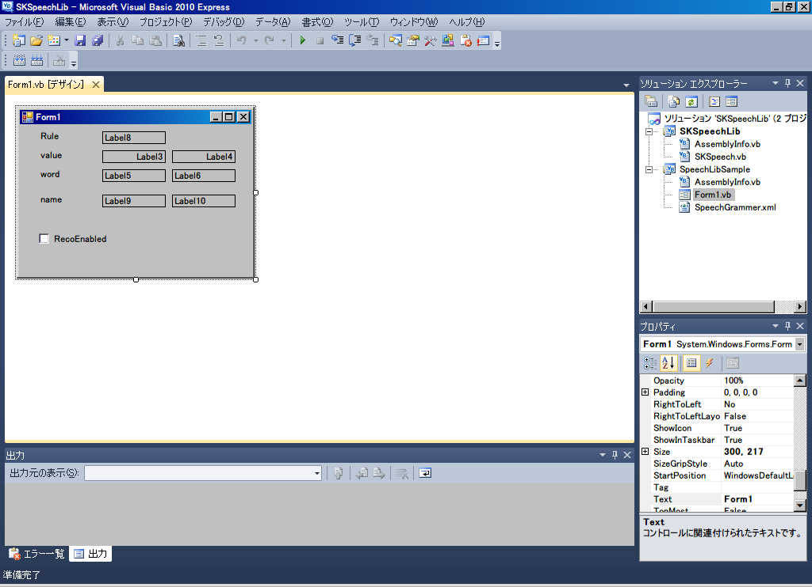
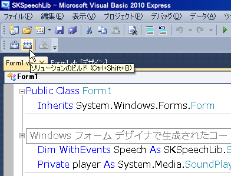

かならずお読みください→
音声認識、手作りのススメ
第2回 音声認識の準備
はじめに
このページでは、できるだけ労力と時間をかけず最小限の作業で、音声認識を試運転できるところまで準備を進めます。
第一の目的は、ご自分やお知り合いの声がパソコンで認識できるか試してみることです。そしてさらに声によってパソコンを（すこし）動かしてみることにします。お手持ちの道具で音声認識を体験して、どのようなものか理解していただくのが第二の目的です。そのため関係する説明を省略しますので、あれこれ自分で自由にやってみたくなった方は自分で自由に勉強してください。
準備するもの
できるだけコストをかけずに進めます、このためインターネットにある機材や情報を利用することにします。無償で入手できるものでも、誰かの苦労によって存在し、そして可能性と機会が広く提供されているのですから、利用にあたってまず感謝の心を忘れないでください。そしてそれ以上は必要ありません。また可能な限りありふれた平凡な道具を使用します。特殊な機材や条件を希望される場合はそれぞれ独自にご検討ください。
パソコン ： WindowsXpは下記の操作を行えばできます。Vista、７、（８も多分大丈夫と思いますが未確認）はできます。マイク端子のあるもの（ないパソコンなんて今時あるの？）マイクやスピーカの調整方法をマニュアルでご確認ください。一部の機種ではスピーカーボリュームが謎めいた場所にあることもありますので念の為。普段お使いのものまたは、既に使わなくなった古いパソコンでも壊れていなければ利用できるかもしれません。うまく行けばコストをさらに低減できるかもしれません。お試しください。
マイク ： ノートパソコンでは内蔵マイクがついていることもあります。なければ別途用意してください。
WindowsXpパソコンは、標準で音声認識できません。しかし次の無償ファイルをインストールするとできるようになります。Vista以降は音声認識機能が既に標準でついていますので、この作業は不要です。
まず、http://www.microsoft.com/en-us/download/details.aspx?id=10121 にアクセスすると図のページが開きます。
画面中央に、Langage English と表示があります。何かすれば日本語表示になるのかな？と思うかもしれませんが全くできません。
ここで、中央のDownloadをクリックすると、次の画面が開きます。
ここで、一番上の、SpeechSDK５１.exe と 下から2番目の、SpeechSDK51LanguagePack.exe にチェックを入れて右下の、Ｎｅｘｔをクリックして、保存場所を指定するとダウンロードが始まります。容量が大きいので時間はかかります。
ここで、SpeechSDK51.exeは、音声ソフト開発キットの本体です。SpeechSDKLangPack.exeは日本語の音声認識を行うために必要な言語パッケージです。英語の音声認識をする場合は必要ありません。これらダウンロードした２つのファイルは、自己解凍方式の書庫ですので、ダブルクリックで解凍が始まります。そのなかなら、setup.exeを起動するとインストールが始まります。途中のダイアログが英語ですので見慣れない表記ですが、そこは注意深く作業を進めてください。
インストール後、コントロールパネルの「音声認識」の「音声認識」タブを開き、言語の設定を、Microsoft Japanese Recognizer v5.1にします。（下図）またプロファイルの認識は、登録ユーザー毎に行われます。複数のユーザでパソコンを共用する場合には気をつけましょう。オーディオ入力でお使いになるオーディオデバイスを設定し、マイクの構成でマイクの音量調整をします。ここでマイクに向かって声を出すと音量レベルメータが程良く動くことを確認してください。音声認識で良い結果を出すためにはマイクの調整は欠かせません。

以上でWindowsXpパソコンでも音声認識できるようになりました。尚、Windows、Vista以降では、標準で音声認識機能がついていますのでこの作業は必要ありません。
次に音声認識のソフト開発で一気に手を抜く効率化を進めるために、音声認識ライブラリを利用します。お作りになったのはkilalaさんでご自身のサイトで公開されています。ありがたく使わせていただきます。
kilalaさんのサイト、「VB.NETで音声認識（その１）音声認識ライブラリを作る」（http://kilala.mydns.jp/def/VBTIPS/005/）から音声認識ライブラリのソースと関連する実行ファイルのサンプルをダウンロードします。
図で示したページの一番下の赤矢印の部分から、ソースと実行ファイルがダウンロードできます。


簡単な説明：この音声認識ライブラリは、指定された言葉を認識すると所定の文字列や数字を返す機能を持っています。認識させる言葉は、グラマーファイルで指定し、認識結果はformで表示します。formには既に認識ライブラリー駆動部分と表示部分が記述してあるので、ここに書き加えることで目的を達成でき、大幅に手間を省くことができます。（感謝）またこれらをサンプルとして勉強することもできます。また上の図のホームページの内容も大変参考になりますのでお勧めです。
以上で準備は完了しました。
第一段階 ： 自分の声を認識させてみましょう。
SpeechLib.zip を解凍すると以下の4つのフォルダと2つのファイルが現れます。
_UpgradeReport_Files
Backup
SKSpeechLib
SpeechLibSample
SKSpeechLib.sin
UpgradeLog.XML
SKSpeechLib.suo （このファイルは隠しファイルなので通常表示されません。コピーやバックアップの際は忘れずに）ここでSpeechLibSample フォルダを開くと以下の様な１つのフォルダと６つのファイルがあります。
bin
AssemblyInfo.vb
Form1.resx
Form1.vb
SpeechGrammer.xml
SpeechLibSample.vbproj
SpeechLibSample.vbproj.userここでbin フォルダを開くと以下の様な９つのファイルがあります。
Introp.SpeechLib.dll
SKSpeechLib.dll
SKSpeechLib.pdb
SSKSpeechLib.dll
SpeechGrammer.cfg
SpeechGrammer.xml
SpeechGrammer1xml.txt
SpeechLibSample.exe
SpeechLibSample.pdbここで、SpeechLibSample.exeを起動すると、以下のような図が開きます。

ここで RecoEnabledにチェックを入れて、マイクに向かって、「エンジン 始動」と発声します。すると…

ここで、上の図のように「エンジン」と「始動」と表示されたら、パソコンはあなたの声を音声認識出来たことがわかります。また「エンジン 停止」と発声すると表示が変化することも確認してください。これでパソコンの音声認識の準備が出来ました。何回か発声してもうまく認識されない場合は、マイクの接続やボリュームの調整など確認してください。
アクセサリーのサウンドレコーダーを利用すると手軽に声をチェックできます。声を録音して再生してみてください。音が割れていたかすれたりしていないか、息がマイクにかかっていないか確認してください。小さすぎる声や大きすぎる声では認識できません。
どのくらいの声なら認識できるとのかはこのような手順で確認してください。以上、「エンジン始動」や「エンジン停止」といった言葉を発声できる人はこのような方法で音声認識の動作確認をしてください。
第2段階 ： 認識する言葉を変更する。ここまでは、kilalaさんのサンプルをそのまま動かしてみました。
どうして「エンジン 始動」など変わった言葉が音声認識のサンプルに使われているのか不思議に思われる方もおられるかもしれません。そもそも、この音声認識ライブラリは、kilalaさんが無線操縦の模型自動車を声で操作するという楽しそう！な目的で開発されたものだからです。さて模型自動車に関心のない人やそれ以外の人はもっと違う言葉を認識させたいと思うかもしれません。思うのが普通です。SpeechLibSample.exeと同じbinフォルダにある、SpeechGrammer.xml を、メモ帳やwordpadで開けてみましょう。
/前進/ぜんしん/ゼンシン;
/前/まえ/マエ;
/バック/ばっく/バック;
/後ろ/うしろ/ウシロ;
/左/ひだり/ヒダリ;
/右/みぎ/ミギ;
/ストップ/すとっぷ/ストップ;
/始動/しどう/シドウ;
/停止/ていし/テイシ;
/エンジン/えんじん/エンジン;
/始動/しどう/シドウ;
/停止/ていし/テイシ;
/全開/ぜんかい/ゼンカイ;
このファイルをながめると、前進、バック、ストップなど、模型自動車らしい言葉が並んでいます。またエンジン、始動、停止、全開 などの先ほどの言葉も書かれています。
ここで、「<p val="100">/エンジン/えんじん/エンジン;</p>」を「<p val="100">/ロケット/ろけっと/ロケット;</p>」に書き換えてみましょう。また「<p val="10">/始動/しどう/シドウ;</p>」を「<p val="10">/発射/はっしゃ/ハッシャ;</p>」に書き換えてみましょう。
これでこのファイルを保存し、SpeechLibSample.exeを起動して、「ロケット 発射」と発声すると認識されます。同じ要領で、「ライダー 変身」「人類 征服」など試してください。すべて認識できます。
（ご注意 ふと気がつくとあなたの周りにだれもいなくなるなんてことがあるかもしれません。やりすぎと周囲の目に気をつけましょう。）
さらに、<p val="12">/全開/ぜんかい/ゼンカイ;</p>の下に次の一行を追加すると、
<p val="13">/不調/ふちょう/フチョウ;</p>
「エンジン 不調」も認識するようになります。
このように、グラマーファイルを書き換えることで、音声認識の対象となる言葉を自由に設定できます。
例えば、市販の音声認識ソフト（普通のユーザのために設計されたソフト）では、Enterを入力するときの言葉は、「エンター」といった具合にわかりやすい覚えやすい言葉でしか使えないようになっています。もし「エンター」の発声が苦手でうまく発声出来なくても、ほかのうまく発声できる言葉でEnterを入力できるようになるとそのひとの可能性が広がります。
しかし、だれのどんな声でもできるとは限りませんので、最終的にはその人の声で動作確認が必要と思います。ここまで説明した手順と方法でその人のどんな言葉が認識できるか、できないのかの確認ができるでしょう。
す こし言葉は不自由だけれど、音声認識は果たしてできるだろうか、うまくいくだろうかとお悩みの方はこれらを試してください。はっきり発声できない、すらすら発声できない場合でもこれでどの程度認識できるのか、そのとき程度の負担なのか、はっきりわかります。納得いくまでとことん試せます。そして、手間と時間はかかりますが、お金はそれほどかかりません。どうぞご検討ください。
第3段階 ： 音声で動作させる
つぎはこれらの声でなにか動作をさせてみましょう。認識させて文字が変わるだけでは面白くないとお考えの方、おまたせいたしました。ここでは、サンプルプログラムを書き換えて新しく実行ファイルを作りますが、このためには、Visual Studio を使ってみましょう。
Visual Studioはプログラムを作るためのソフトです。製品版は高価で高機能です。しかし７年まえから、機能をやや低めた、EXPRESS版が初心者、ホビーユーザ、学生を対象として無償で提供されています。Microsoftのサイトで所定の手続きを行い、ダウンロードしてください。
参考：VisualBasic中学校 ： VisualBasic2012Expressを無料でインストールする方法
（http://homepage1.nifty.com/rucio/main/material/VB2012Install.htm）
このページをお読みの方に心強い味方になってくれる（はずの）サイトです。インストール出来ましたら。kilalaさんのサイトからダウンロードしたサンプルを見てみましょう。ファイルのいくつかのアイコンがｖｂなど見慣れないアイコンに変わっていることでしょう。このサンプルは、ＶｉｓｕａｌＳｔｕｄｉｏを使うことを前提としたサンプルなのです。ｋｉｌａｌａさんはこのサンプルをＶｉｓｕａｌStudioの2003で作られたようです。ですので、2003以降なら問題なく作業できることでしょう。

ここでSKSpeechLib.sinをダブルクリックすると、VisualStudio（の中のＶｉｓｕａｌＢａｓｉｃ）が起動します。ここで右のソリューションエクスプローラーからForm1.vbをダブルクリックすると図のような（もう見慣れた）Form1が表示されます。（図はVisualBasicExpress２０１０です）
ここでForm１の枠内をダブルクリックすると、下記のコードが表示されます。kilalaさんのオリジナルに６行目と２３から２６行めを追加しました。
Public Class Form1 Inherits System.Windows.Forms.Form " Windows フォーム デザイナで生成されたコード " Dim WithEvents Speech As SKSpeechLib.SKSpeech Private player As System.Media.SoundPlayer = Nothing Private Sub SKSpeechRecognitionEventHandler(ByVal sender As Object, _ ByVal e As SKSpeechLib.SKSpeechEventArgs) _ Handles Speech.Recognition Label4.Text = "" Label6.Text = "" Label8.Text = e.RuleName Label3.Text = e.values(0).ToString Label5.Text = e.Words(0) Label9.Text = e.ItemName(0) If e.RecoCount > 1 Then Label4.Text = e.values(1).ToString Label6.Text = e.Words(1) Label10.Text = e.ItemName(1) End If If e.values(0) = 5 Then player = New System.Media.SoundPlayer("C:\WINDOWS\Media\ringin.wav") player.Play() End If End Sub Private Sub Form1_Load(ByVal sender As System.Object, ByVal e As System.EventArgs) Handles MyBase.Load Speech = New SKSpeechLib.SKSpeech("SpeechGrammer.xml") Speech.Enabled = True CheckBox1.Checked = Speech.Enabled End Sub Private Sub CheckBox1_CheckedChanged(ByVal sender As System.Object, ByVal e As System.EventArgs) Handles CheckBox1.CheckedChanged Speech.Enabled = CheckBox1.Checked End Sub End Classサンプルソフトは声を認識するとグラマファイルで定義した結果の戻り値を次々と表示するように作られている。そして表示が終わると次の音声に備えて待機状態に入ります。ここで、この表示が終わったあとに２３から２６行目の４行を追加します。意味は戻り値が５（ストップと認識すると戻り値は５になる。グラマーファイル参照）ならば、電話の呼び出しベルの音（ringin.wav）をならす。です。（ifとかthenとかあるので意味はなんとなく理解できるでしょう）（因みに6行目では、音を鳴らす準備をしています。）
このように文を並べて、コンピュータが行う仕事を指示します。この文をコンピュータプログラムと言います。
プログラムを変更したあとは、実行ファイルを作ります。下の図の部分をクリックするとビルドという作業を行い、実行ファイルSpeechLibSample.exeが、ｂｉｎフォルダーに作られます。

このようにプログラムをつくり改変することで、声によってなんらかのはたらきをパソコンに実行させることができます。
上の例では、「ストップ」でリリーンと鳴ります。これを工夫すれば、「ロケット 発射」でドカーンもできます。
ご注意 ３つ上の図で右のソリューションエクスプローラーに、Speechgrammer.xmlが表示されています。ここをダブルクリックするとSpeechgrammer.xml グラマファイルの編集ができます。しかしこのファイルは、SpeechLibSampleフォルダ内のSpeechgrammer.xml で、ビルドによって作られる実行ファイルが参照するのは、binフォルダ内のSpeechgrammer.xml です。正しく動作させるためには、編集後にbinフォルダへコピーする必要がありますので、注意してください。
準備のまとめ
ここでは、kilalaさんの音声認識ライブラリ（SKSpeechLib）を利用して、音声認識を行う方法について簡単に説明しました。
このライブラリは音声コマンドを手軽に実行できる貴重なものであり、また応用範囲も広く、勉強用から練習用基本的な試作品レベルまで利用可能です。リハビリテーションや特別支援学校では、普通のやり方が苦手でうまくいかない人がたくさんおられ、さまざまな取り組みが行われています。しかし問題解決のために採用できる手段はさまざまな事情により大変不足しております。まるで持ち駒が妙に少ない詰将棋のような状態です。低コストで画期的な手段、方法をこれからも開発していきたいと考えています。
2013/10/31 公開研究企画課リハ工学科にもどる